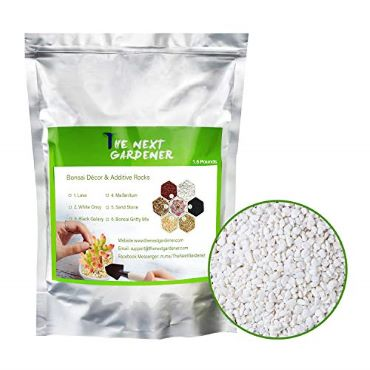

Succulent and Cactus Bonsai DIY Rocks, White Onxy, for Terrarium, Fairy Gardening, Top Dressing, 1.5lb
$8.99
Buy on Amazon
Manufacturer description
- 【Artistic Bonsai Material】Proper rocks is a necessary to make your plants not only a pot with a plants. When bonsai is becoming a mini garden, a mini park or even a mini mountain, add some rocks, like black galaxy, is very important
- 【Not Only for Beauty】Add top rocks for a potted plants is also hope to stable newly planted pants and help lock the water and other nutrition of the soil to help plants grow better
- 【Multi Use】Besides for as bonsai top dressing rocks, these white rocks is also widely used in Aquariums to help absorb impurity and keep water clean
- 【DIY Material】With multi colors, these white onxy is good for terrarium, fairy gardening and other DIY projects
- 【Easy Zip Resealable Bag & Well Packed】 It comes in a good sized bag. Well packed and simply tear off the top then reseal. You can take the portion you need from the cactus and succulent soil mix, and then seal it back for perfect prevention and storage